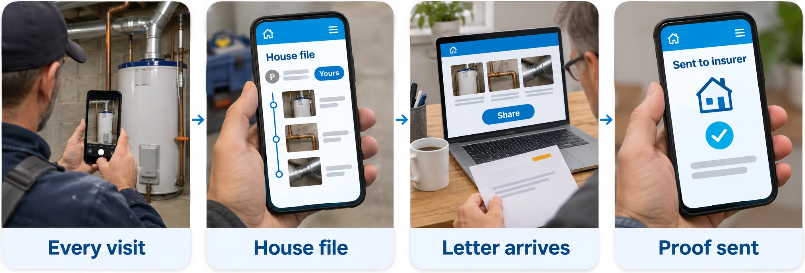
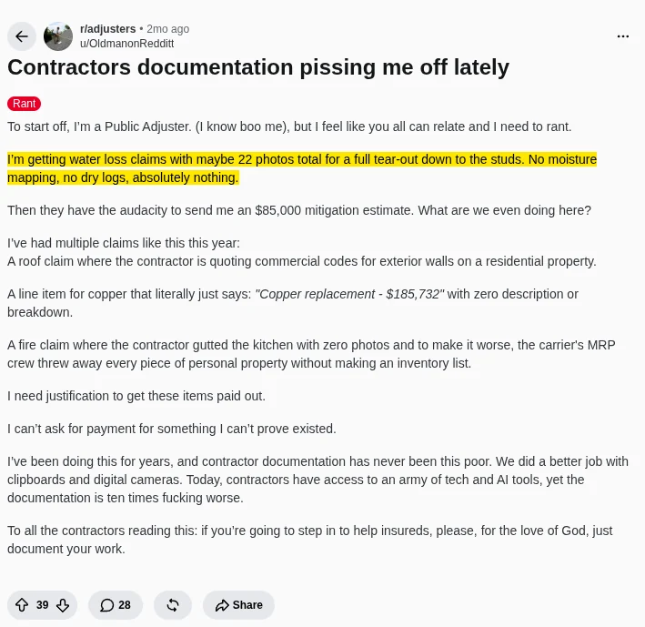

House Proof File
CustomersA bold bet

- 1

I photograph my work on every visit.
- 2

Photos, parts and dates build a house file the owner keeps.
- 3
When asked, the owner shares the file in one tap.
- 4

The insurer, the city or a buyer gets proof.
Problem
When the insurer, the city or a buyer asks what was fixed, I have no proof of how the house looked before.
What you gain
My work is on record, so my name stays with the house.
Brings the next customer
The file stays with the owner and points back to me at every visit.
Why build it
Providers already take the photos, and the file turns them into proof that keeps customers coming back.
Who has it
Homeowners, and the providers who fix their houses.
Close

Also inside
- House year in review
- Plan the next upgrade
- Follow the tenant